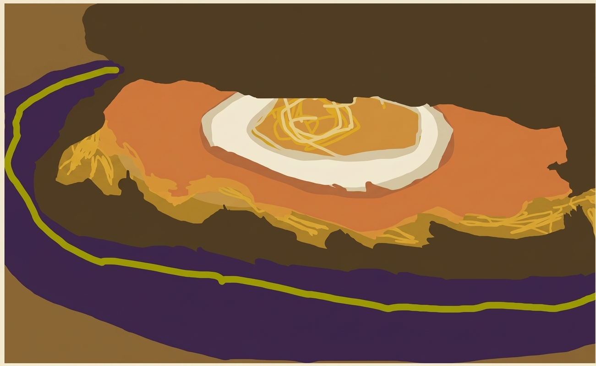

Thick-Toasted Gouda and Egg Melt Sandwich

A comforting, gourmet breakfast melt featuring thick-toasted brown bread buttered inside and out...
Ingredients
- 2 thick slices of hearty brown bread
- 2 slices of sandwich ham
- Rich Gouda cheese slices
- Extra shredded cheese (for sprinkling on top of the sandwich)
- 1 large egg (for that ultimate gooey yolk)
- Butter (for coating both the outsides and the inside of the bread)
- Spices: A pinch of cracked black pepper, garlic powder, and a dash of smoked paprika
Steps
- Lightly butter one side of each thick brown bread slice, and spread a thin layer of butter on the inside facing sides as well.
- Heat a skillet over medium-low heat. Place the bread slices butter-side down in the pan, layering your Gouda cheese and 2 slices of sandwich ham so it starts getting warm and melty.
- In a separate pan or right alongside the sandwich, fry your egg, keeping the heat moderate so the whites set while the yolk stays gloriously runny.
- Gently place the fried egg right on top of the melting cheese and ham, and sprinkle your spices (black pepper, garlic powder, and paprika) directly onto the egg and cheese.
- Top with the second slice of thick brown bread, press down gently, and sprinkle an extra handful of shredded cheese right onto the top crust of the bread.
- Toast until both sides are a deep golden brown, the top cheese is delightfully crisp and melted, and the inside is fully gooey.
- Slice right down the middle, watch that warm yolk flow, and enjoy immediately!
← Back to Home